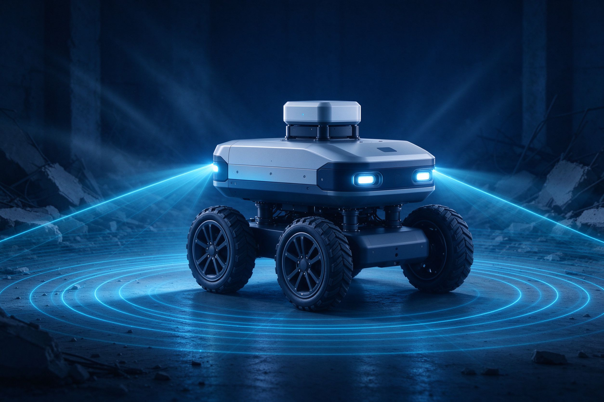

3DGS 自适应密度控制研究
针对有限证据下高斯增删不可靠的问题，提出新的自适应密度控制策略，在保证重建质量的同时显著压缩元数量，构建完整消融与可靠性评测体系。
算法工程师 / 计算机视觉方向
电子信息专业硕士，研究方向覆盖扩散模型、3D Gaussian Splatting、具身智能（VLA）与目标检测。具备从算法研究、模型轻量化（INT8 量化）到 Jetson 嵌入式部署的全链路工程能力，擅长把实验室原型打磨成可运行的系统。
当前核心课题为 3D Gaussian Splatting 自适应密度控制（ADC）的有限证据可靠性理论，同时探索 DiT 扩散架构与 Flow Matching 的融合，并关注 3DGS 在智慧城市、电力巡检等场景的落地。
针对有限证据下高斯增删不可靠的问题，提出新的自适应密度控制策略，在保证重建质量的同时显著压缩元数量，构建完整消融与可靠性评测体系。
自研 DiTActionExpert 架构，实现基于 Flow Matching 的训练与推理脚本，完成从噪声到目标分布的稳定生成，并推导完整损失函数演化路径。
集成视觉语言模型与机械臂控制策略，结合 FlashAttention-2 加速训练，在 LIBERO 基准上取得高成功率，并完成 Jetson 端实时闭环部署。
面向城市街景训练检测与跟踪模型，优化小目标与遮挡场景表现，经量化加速后在边缘设备上实现实时多目标检测。

基于 STM32 与 Jetson Nano 打造自主移动平台，融合摄像头、红外与 360 度激光雷达，实现地下/室内无 GPS 环境下的自主导航与搜救。
构建覆盖温室环境的多模态感知与数据监测平台，结合视觉识别与物联网传感，实现作物长势分析与异常预警的可视化管理。
研究方向为计算机视觉与深度学习，聚焦 3D Gaussian Splatting 自适应密度控制与扩散模型。承担实验室核心课题，参与机器人竞赛与横向项目。
系统学习信号与系统、数字图像处理、嵌入式原理等课程，较早进入实验室接触深度学习与硬件开发，奠定算法与工程结合的基础。